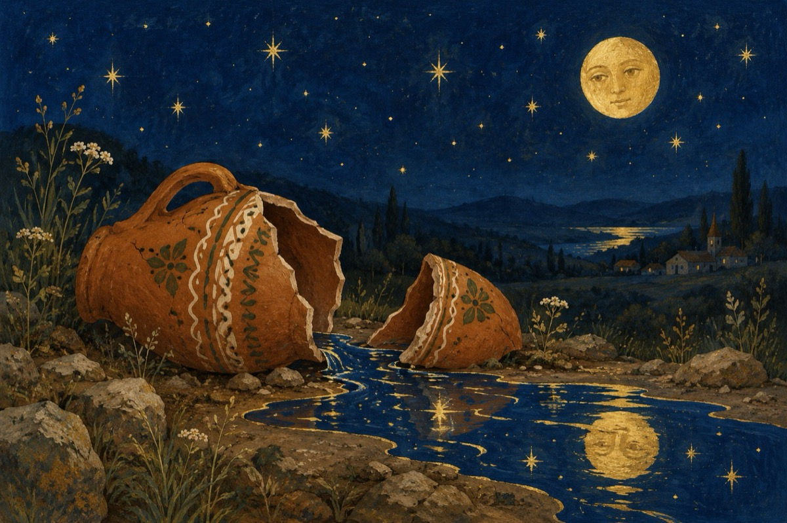

Ulciorul nu merge de multe ori la apă
De e sete ce să facă?
Merge să ia apă.
Și după atâta chin
Merge să ia vin.
Azi așa și mâine-așa
Apă mereu a căra
Și nimic nu se-ntâmpla
Apă căra, apă bea!
Vrând să se reprofileze
A-nceput să inventeze
Și cum ideile vin
S-a apucat de cărat vin
Da-ntr-o zi când era beat
Uite-așa s-a-mpiedicat.
Și nici una și nici două,
Ulciorul s-a rupt în două
Și-a tras o concluzie
Nicidecum iluzie
De-a fi cărat numai apă,
N-ajungea capul să-și spargă
Vasile Groza